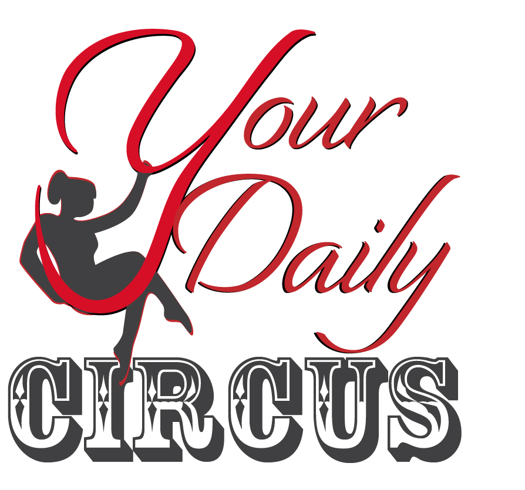
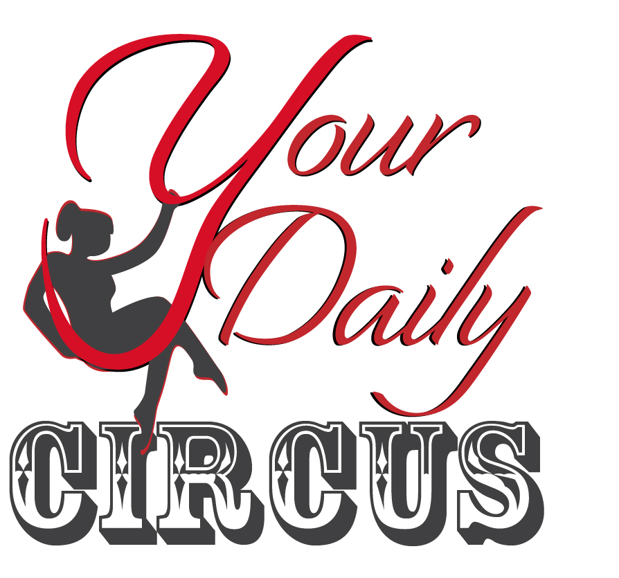

Your Daily Circus
A Goal Tracking Application
Circus skills are difficult to train and to track because they’re about the body, about flexibility and strength, and lifting other people rather than lifting easily numbered weights. This application will help narrow down to one or two specific goals at a time and help measure progress in photo form.
Logos
 
